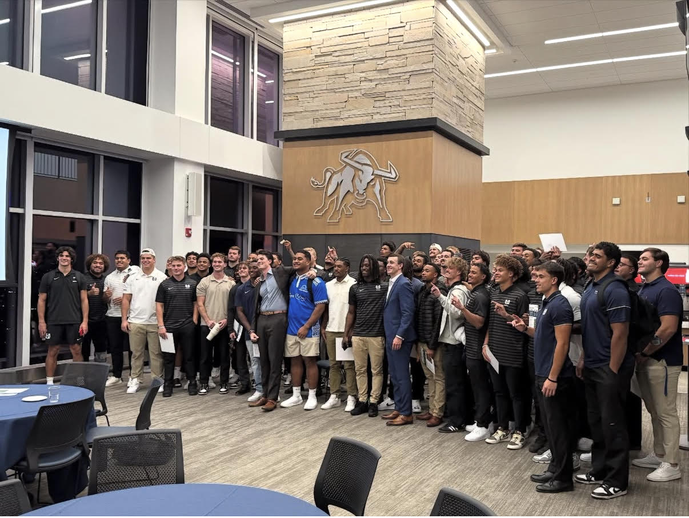

Aggies Lead
Aggies Lead is Utah State Athletics' student-athlete development program, focused on leadership, career readiness, personal growth, and life beyond sport. Through workshops, mentorship, service, and professional development opportunities, Aggies Lead prepares student-athletes to succeed during their time at Utah State and after graduation.
Leadership Development
Career Readiness
Professional Growth
Community Engagement